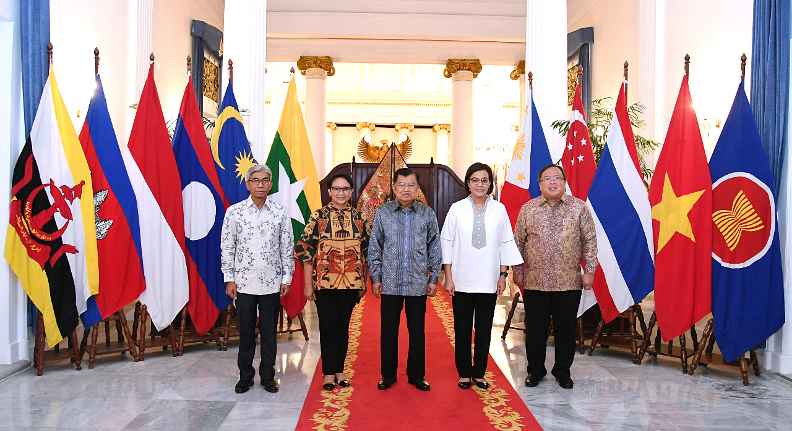
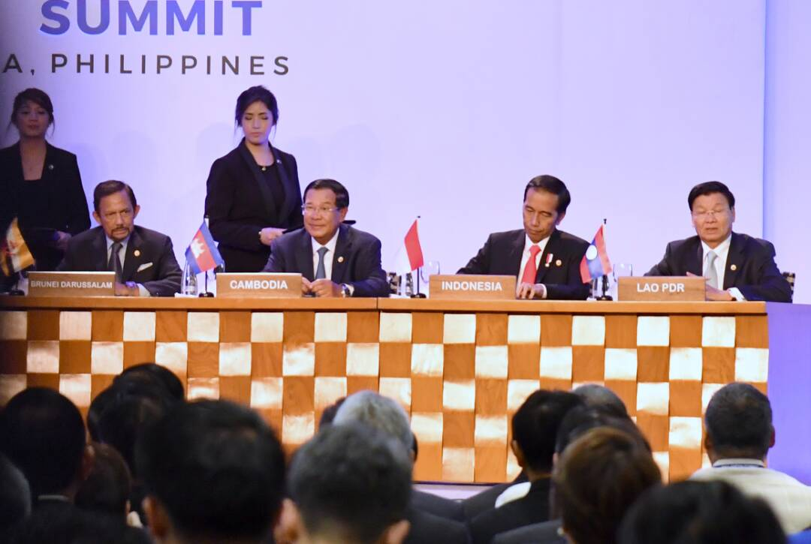
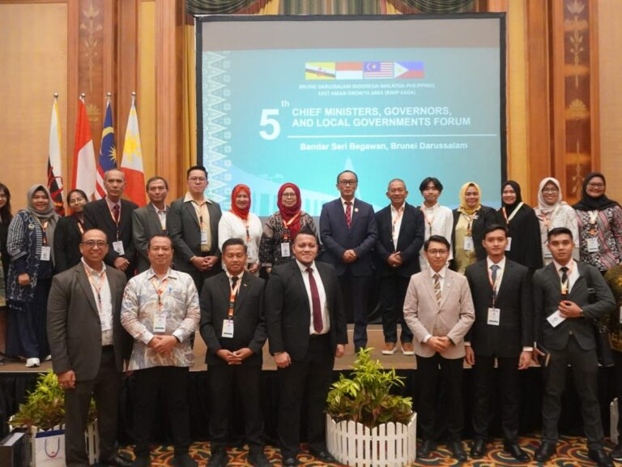

  
Peran Indonesia dalam Kerjasama Bilateral
Hubungan kerjasama negara Meksiko dan Indonesia semakin terbuka dan terlihat pada salah satunya, bidang sosial budaya. Negara Meksiko memiliki 3 sekolah dasar yang bernama Indonesia, yakni Escuela de la Republica de Indonesia di Tacuba-Mexico City (Sekolah Indonesia-Tacuba), Escuela de la Republica de Indonesia di Itzapalapa-Mexico City (Sekolah Indonesia-Itzapalapa), dan Colegio Indonesia di daerah Coacalco-Estado de Mexico. Dari ketiga nama sekolah tersebut, membuktikan betapa erat hubungan antara Meksiko dan Indonesia.
Namun, dalam jamuan yang digelar di KBRI Mexico City, Dubes Yusra Khan menawarkan kegiatan pelatihan seni, seperti tarian dan musik, serta budaya Indonesia untuk meningkatkan pengenalan Indonesia untuk sekolah-sekolah tersebut. Hal ini juga sangat disetujui dengan 3 kepala sekolah tersebut, mereka juga menantikan program untuk dilaksanakan karena mereka percaya dapat menambah rasa ingin tahu dan sayang siswa Meksiko terhadap negara Indonesia. “Kesepakatan ini sangat menggembirakan. saya yakin siswa-siswi akan bangga menarikan atau menyanyikan lagu Indonesia saat bersama masyarakat Indonesia memperingati Hari Ulang Tahun Kemerdekaan RI bulan Agustus mendatang," kata Kepala Sekolah Colegio Indonesia yang pernah mengikuti Upacara Peringatan Hari Kemerdekaan RI ke-50 sebagai salah satu Teman Presiden RI tahun 1995.
Pada 2019 saat kunjungan Menko Puan ke Escuela de la Republica de Indonesia, beliau meresmikan ruangan audio-visual yang dikabarkan merupakan hasil donasi beberapa anggota DPR yang pernah mengunjungi sekolah tersebut. “Kami berharap sekolah ini mampu menjadi gudang informasi para siswa yang memiliki rasa ingin tahu tentang Indonesia,” ujar Menko Puan. Menko Puan juga berharap untuk mengirimkan guru BIPA (Bahasa Asing bagi Penutur Asing) dengan tujuan meningkatkan ketertarikan dan kemampuan para siswa, serta guru-guru dalam berbahasa Indonesia.
Tak hanya di Mexico, Escuela Republica de Mexico adalah satu-satunya sekolah di Jakarta yang diresmikan oleh dua pemimpin negara pada 1961, yakni dari Indonesia adalah Ir.Soekarno dan dari Meksiko adalah Roberto Lopez. Mereka menjadikan sekolah ini istimewa dan memiliki ciri khasnya tersendiri. Prasasti bersejarah di sekitar lingkungan sekolah menjadi bukti kuatnya hubungan persahabatan antara 2 negara tersebut. Namun, pada 1979 sekolah ini kembali mengubah namanya menjadi SDN Gunung 05 karena ada kebijakan pendidikan yang didukung dengan Surat Keputusan yang dikeluarkan Gubernur DKI Jakarta.